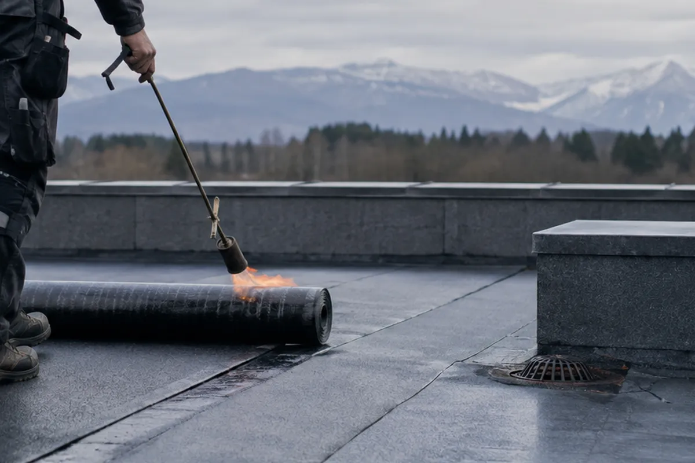

Kernkompetenz
Flachdachabdichtungen
Unser Schwerpunkt seit 30 Jahren. Bitumen- und Kunststoffabdichtungen auf Wohn-, Gewerbe- und Industriebauten, sauber verschweißt und im Detail durchdacht — denn undicht wird ein Dach fast nie in der Fläche, sondern am Anschluss.